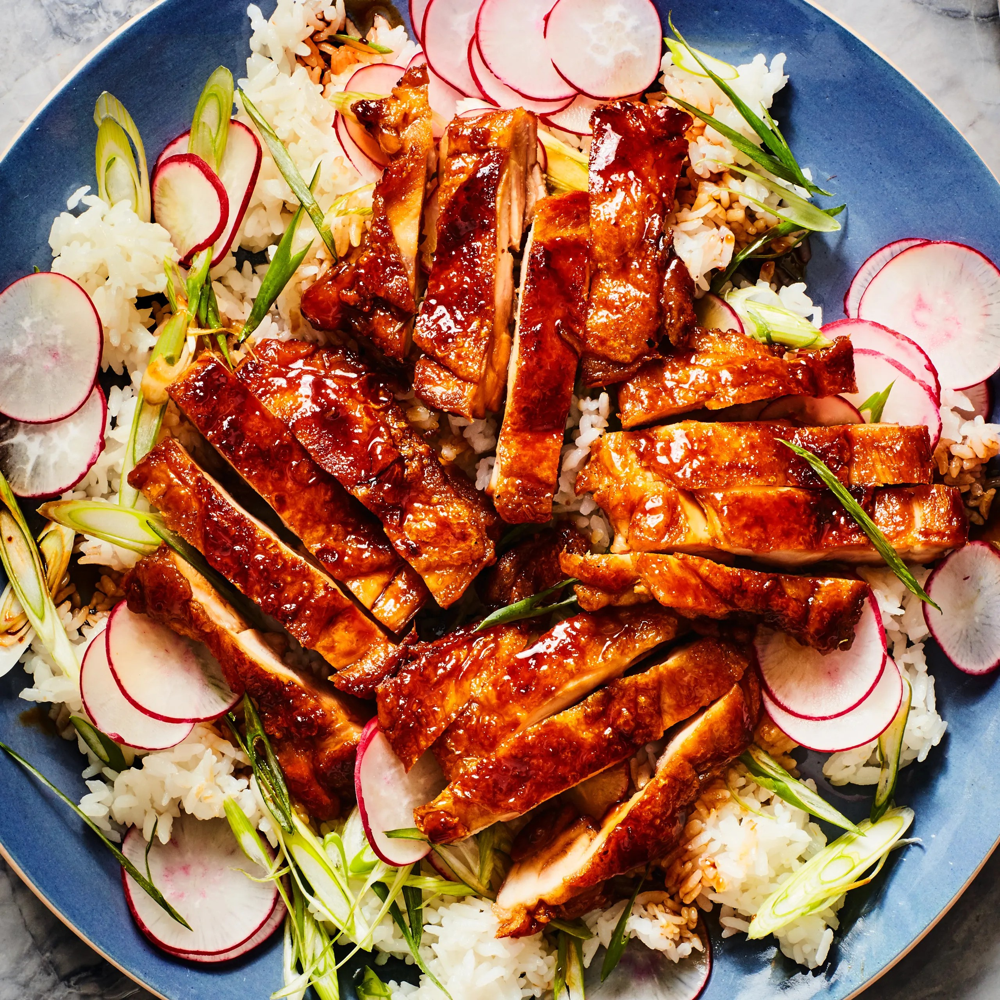

Chicken Teriyaki

Chicken teriyaki is a popular Japanese dish made with grilled or pan-fried chicken glazed with a savory and sweet teriyaki sauce. The sauce typically consists of soy sauce, mirin, sake, and sugar. Often served over rice and accompanied by vegetables, chicken teriyaki is known for its rich flavor and glossy finish, making it a favorite in Japanese cuisine and beyond.
- Chicken: 2 pounds boneless chicken thighs.
- Onion: 1 bunch green onions finely sliced.
- Garlic: 1 teaspoon finely minced garlic.
- Ginger: 2 teaspoons grated ginger.
- Alcohol: 1/4 cup sake.
- Sugar: 1/3 cup brown sugar.
- Rice:
- 1 1/2 cups cooked rice.
- 3 tablespoons rice vinegar.
- Oil:
- 2 teaspoons canola or peanut oil.
- 1 teaspoon toasted sesame oil.
- Seasonings, herbs, and sauces:
- 1 cup soy sauce.
- 1 tablespoon white sesame seeds.
- 1/4 teaspoon crushed red pepper.
- 1/2 teaspoon ground black pepper.
- 1 teaspoon kosher salt.
- Combine soy sauce, sake, rice vinegar, and brown sugar in a bowl and whisk well until sugar is dissolved.
- Stir in sesame seeds and crushed red pepper and set aside.
- Heat oils in a large skillet over high heat.
- Sprinkle salt and pepper evenly over chicken.
- Add chicken in a single layer to the skillet and cook, undisturbed until chicken is browned and releases easily from the pan, 4 to 6 minutes. Flip chicken pieces, cook 1 more minute and remove from pan; set aside.
- Reduce heat to medium and add ginger and garlic.
- Cook, stirring constantly, until fragrant, about 1 minute.
- Reserve 2 tablespoon of the green onions for garnish and add remaining green onions to the skillet. Cook for 1 minute.
- Add 1 cup reserved soy sauce mixture to the skillet and stir with a wooden spoon, scraping up any browned bits from the bottom of the skillet.
- Bring mixture to a boil and cook until sauce has reduced by about a third or until slightly thickened and glossy.
- Return chicken to the skillet and cook, stirring occasionally, until sauce is thickened slightly and chicken is coated in the sauce and cooked through.
- Serve over rice and sprinkled with reserved green onions.